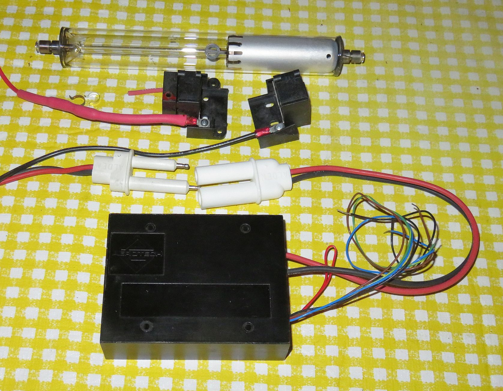
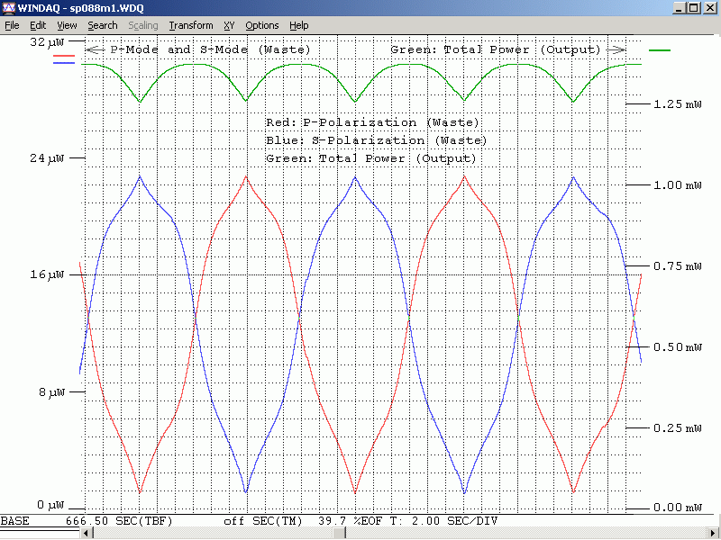

The HeNe laser tubes in these kits are typically 9 to 10 inches in length and may use either a DC-input or AC-input brick power supply. If the power supply has a female Alden high voltage connector, a short mating male Alden cable will be included. Where the diameter of the laser tube permits, a pair of plastic HeNe tube mounts will also be included.

(The style of some parts may vary slightly from what's shown in the photo.)
The following components are included:
NOTE: Most of these tubes have cathode-end output so touching that end of the tube will not result in a shocking experience. But do not touch the anode end or its wiring when powered or for a while after. It probably won't be lethal but tossing the entire rig across the room due to a reflex response is bad form and may impact your grade. ;-) More on this below.
To power the laser tube, please go to one of these depending the version you have:
As noted there are two beams from the tube. The main beam is the stronger one (typically by a factor of 25-100 or more) than the "waste" beam. Which end of the tube is which is set at the time of manufacture based on technical or application requirements. For the tube in the kit, it will need to be determined as both types have been shipped at times although for these high power tubes, the main beam is mostly cathode-end output. This can be confirmed before powering because the output beam emerges from the end with the AR coating, which appears blue-ish in reflection. However, it may be the anode or cathode-end. Also as noted, the tube MUST be oriented so the glass-end is wired to the positive (red wire with ballast) of the HeNe laser power supply or else bad things will likely happen. Even though the tube may light and lase, it will likely be destroyed after a while running with reverse (incorrect) polarity.
CAUTION: DO NOT stare into the beam or its specular reflection with your remaining good eye. These 2-4 mW lasers can cause permanent damage to vision. 1 mW laser is similar in intensity to that of the noonday Sun. These can be 4X higher and even a momentary flash in the eye is not a good thing (though probably not resulting in permanent damage). But if your original equipment eyeballs are ruined, replacement parts are not currently available at affordable prices.
Beam Characteristics
The output of the HeNe laser tube in these kits is single spatial mode TEM00 which means it has a nearly perfect Gaussian profile - a single round spot whose intensity falls off smoothly. This is better than for many other types of lasers without a lot of work.
The tubes provided in this kit usually have a relatively narrow divergence - typically 0.8 to 1.5 milliRadians (mR, parts/thousand, 0.8-1.5 mR). So a beam with a 1 mR divergence will spread at a rate of 1 mm per meter. Thus at 1 meter, the beam (to 1/e points in intensity) will be just over 1 mm larger than the original beam. For this example, that would be around 2 mm. A suitable lens can be used to fine tune the collimation, or focus the beam to a point. A pair of lenses can be used to expand the beam by the ratio of their focal lengths. The larger the beam diameter, the smaller the possible divergence. Surplus Shed has a semi-infinite selection of inexpensive lenses including many suitable for beam expanders.
Longitudinal Modes and Polarization
A 9-10 inch tube like this operates with 1 to 3 longitudinal modes and for red (633 nm) lasers, adjacent modes are generally orthogonally polarized. As the tube heats and expands, the modes move through the neon gain curve as depicted in HeNe Laser Mode Sweep: 140 mm (~5.5 inch) Cavity Length Animation. To view these from the real laser requires a Scanning Fabry-Perot Interferometer (SFPI, also called a "Laser Spectrum Analyzer"). (I have SFPI kits available for 1/10th to 1/50th of commercial versions.) Inserting a polarizing filter in the beam will enable the polarization behavior to be observed. Some tubes will be smooth and continuous as in the animation. Others will be "flippers" where the polarization of the individual modes may switch as some point during the mode sweep (though adjacent modes will still be orthogonally polarized). Most of the tubes in these high power kits have well behaved modes.
The typical mode sweep for a similar length well behaved tube is shown below:

This is a plot of the longitudinal mode intensity with the red and blue being the intensity of the orthogonal polarized components. Note that unlike very short tubes, the mode amplitudes do not go to 0. A plot like this can be produced using a polarizing beam splitter, a pair of photodiodes, and an inexpensive (<$60) data acquisition system. In fact, the least expensive way to display the modes on a Windows computer would be to via µSLC1 even if stabilization is not desired. See µSLC1 Installation and Operation Manual.